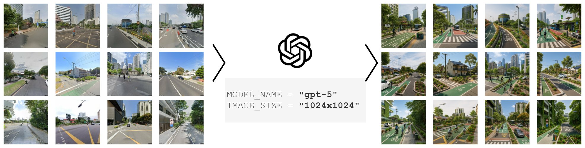
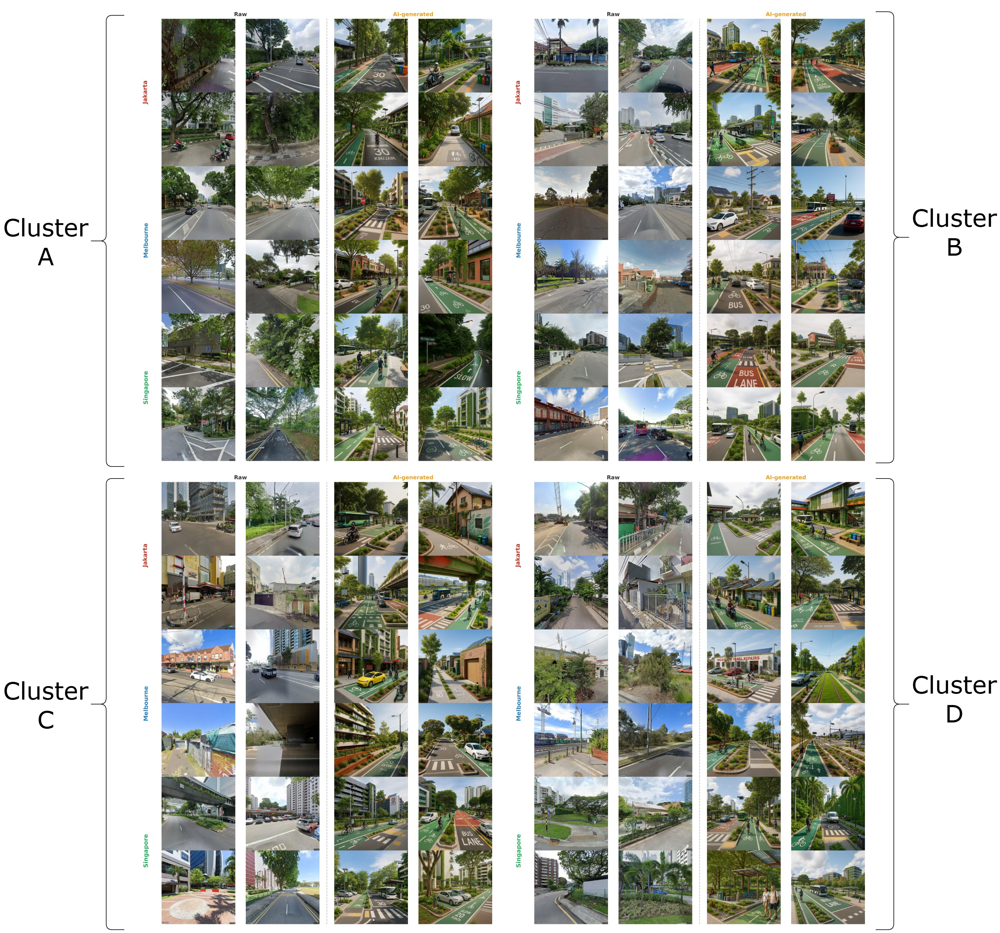
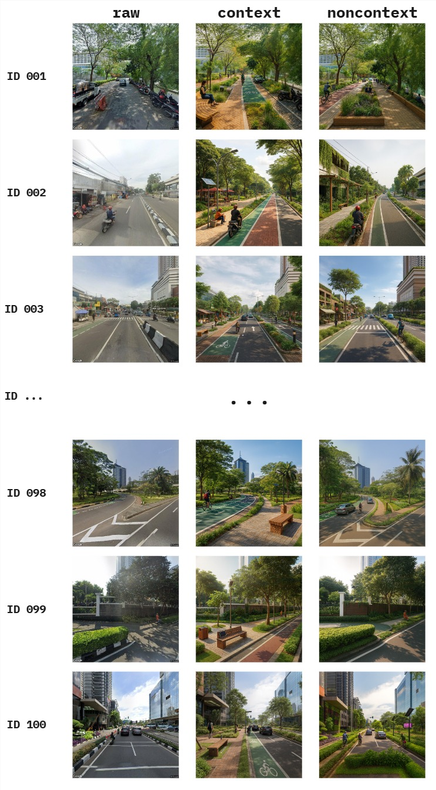
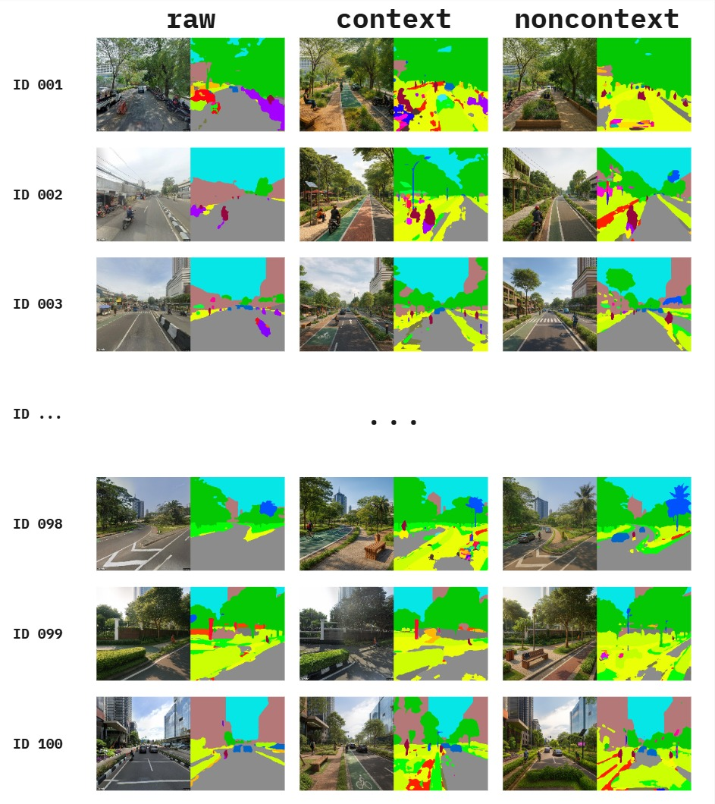

How does generative AI interpret and visualize urban "sustainable" streetscapes? A cross-city research project examining Jakarta, Melbourne, and Singapore.
About
About the project
A cross-city investigation of how generative AI interprets and visualizes "sustainable" urban streetscapes.
Motivation
A sustainable streetscape is commonly associated with greenery, improved pedestrian infrastructure, cycling facilities, and traffic calming — yet the concept itself remains ambiguous and contested. What counts as "sustainable" is deeply contingent on local urban morphology, governance priorities, and socio-cultural expectations. A streetscape considered sustainable in one context may be inappropriate or counterproductive in another.
Generative AI tools are now entering the workflows of architects, urban planners, and policy communicators. They can translate text prompts into vivid streetscape visualizations, scaling design ideation in ways previously impossible. But this comes with a risk: when sustainability is applied through generalized transformation rules, it can be reduced to a limited set of recurring features — vegetation, bike lanes, widened sidewalks — replicated across cities regardless of fit. Sustainability may quietly become a standardized aesthetic rather than a place-based strategy.
This project asks: do AI-generated outputs reflect context-sensitive improvements, or do they unintentionally standardize what "sustainable" streetscapes should look like across different urban settings?
Research questions
What general visual characteristics are associated with AI-generated sustainable streetscapes?
How does the semantic composition of streetscapes shift during transformation toward becoming "more sustainable"?
To what extent do these transformations lead to homogenization of streetscape semantics and a reduction of cross-city variation?
How does prompt specificity (context-rich vs. generic) shape what generative AI produces under the label "sustainable"?
Methodology
The project combines three methodological pillars: street-view imagery collection from selected cities (Jakarta, Melbourne, Singapore), controlled image-to-image transformation using OpenAI multimodal models (GPT-4o, GPT-5), and semantic analysis of the outputs through pre-trained segmentation models (Mask2Former with Swin-Large backbone, trained on ADE20K).
Pixel-level segmentation outputs are aggregated into seven domain-relevant categories (sky, vegetation, built structure, road infrastructure, vehicle, water and natural, street furniture) and projected into a shared two-dimensional space using UMAP. Scene typologies are identified through K-Means clustering on the raw images, then projected onto the AI-generated images as a fixed baseline. This design choice — clustering on raw images only — ensures that any redistribution of AI images across clusters reflects a genuine structural shift, not a contamination of the reference geometry.
Homogenization is assessed using four complementary metrics: mean pairwise distance, normalized cluster entropy, feature diversity, and convex hull area. Cross-city distinguishability is tested using chi-square independence tests with Cramér's V.

Image generation pipeline. Raw Google Street View imagery is transformed by GPT-5 into AI-generated "sustainable" versions at 1024 × 1024 resolution.

Examples from each of the four scene typology clusters (A–D), comparing raw Google Street View imagery against AI-generated counterparts across Jakarta, Melbourne, and Singapore.
Key findings (so far)
Vegetation inflation in every cluster and city, with road and sky area reciprocally compressed.
Within-city compositional convergence: feature diversity declines 23%–31% across the three cities studied.
Between-city distinguishability is preserved — Jakarta, Melbourne, and Singapore remain statistically separable after transformation.
Prompt specificity matters: context-rich prompts produce more balanced streetscapes (with sidewalks, stormwater features, public seating, lighting), while generic prompts default to culturally salient "sustainability markers" — cycle lanes and manicured greenery.
Papers
Papers
Manuscripts produced under this project. Both papers are currently in progress and under journal consideration.
In Progress
Envisioning urban "sustainable" streetscapes through AI-generated street-level imagery: a cross-city semantic analysis
Authors and affiliations to be disclosed upon acceptance.
This study investigates whether AI-driven sustainable streetscape redesign homogenizes semantic diversity and erodes cross-city variation. Using street-view imagery from Jakarta, Melbourne, and Singapore, we generate "more sustainable" versions through a GPT-5 text-guided pipeline and analyze them via semantic segmentation (Mask2Former), joint UMAP embedding, and four complementary diversity metrics. We find that the transformation is systematic rather than neutral: vegetation is inflated while road and sky area are reciprocally compressed, the open-roadscape typology collapses in favor of built-corridor and vegetated scenes, and within-city feature diversity declines 23%–31% across all cities. Between-city distinguishability, however, is preserved. The results suggest that a zero-shot foundation model executes "more sustainable" as a greening instruction — drifting toward a global prototype that absorbs contextual specificity while leaving human-scale and architectural elements largely untouched.
Keywords: Generative AI · GPT-5 · Semantic segmentation · Street view imagery · Sustainable streetscape · UMAP
In Progress
Interpreting "sustainable" streetscapes with generative AI: context-rich vs. generic prompting
Authors and affiliations to be disclosed upon acceptance.
This study investigates how prompt specificity influences GPT-4o's interpretation of sustainable streetscapes in text-to-image generation. Using 100 Jakarta Google Street View scenes across three treatments — raw, non-context (generic sustainability prompt), and context-rich (a prompt specifying ten sustainability categories: sidewalks, street furniture, trees and landscaping, lighting, bicycle infrastructure, stormwater management, public open spaces, building frontage, smart technologies, and mobility systems) — we segment and quantify object appearances and run ANOVA, Tukey HSD, and LPIPS similarity analyses. Results show that context-rich prompts yield more balanced streetscapes — integrating sidewalks, vegetation, stormwater features, lighting, and public seating — aligning with scholarly definitions of integrated, performance-oriented urban design. Generic prompts, in contrast, favor culturally salient "sustainability markers" such as cycle lanes and manicured greenery, underrepresenting ecological and social infrastructure.
Keywords: Google Street View · GPT-4o · Prompt engineering · Sustainable streetscape · Semantic segmentation
Manuscripts are currently under journal consideration. Preprints, full citations, and links will be added once available.
Datasets
Datasets
Open-access datasets released under the project, hosted on Zenodo and Hugging Face.
Dataset v1 — Jakarta, prompt-treatment study
Our first dataset accompanies the prompt-specificity study. It contains 100 Jakarta Google Street View scenes, each accompanied by two GPT-4o generated counterparts — one produced under a generic "non-context" sustainability prompt, and one under a "context-rich" prompt that explicitly enumerates ten sustainability categories (sidewalks, street furniture, trees and landscaping, lighting, bicycle infrastructure, stormwater management, public open spaces, building frontage, smart technologies, and mobility systems).
The dataset enables direct comparative study of how prompt specificity reshapes AI's interpretation of sustainability at the streetscape level, and includes both raw images and segmented counterparts.

Example entries from Dataset v1. Each row pairs a raw Jakarta street-view scene with its context-rich and non-context AI-generated counterparts.

Each entry is paired with semantic segmentation outputs. Pixel-level masks support quantitative analysis of object appearance under different prompt treatments.
100 Jakarta scenes × 3 treatments (raw, context, non-context), with paired segmentation masks. Full descriptions of fields, file structure, and generation parameters are documented on the Zenodo record page.
The second dataset widens the scope from a single city to three: Jakarta, Melbourne, and Singapore. We collected 1,000 random points per city along OpenStreetMap road networks, retrieved the nearest available Google Street View imagery, and filtered for indoor, blurred, and non-representative scenes. The final corpus contains 567 images from Jakarta, 832 from Melbourne, and 694 from Singapore.
Each raw scene is paired with a GPT-5 generated "more sustainable" counterpart (2,093 raw + 2,093 generated = 4,186 images total). All images are standardized to 640 × 640 pixels.
Hugging Face · Open access
genai_sustainablestreetscape
Cross-city corpus of paired raw and AI-generated streetscapes from Jakarta, Melbourne, and Singapore. Includes generation parameters, source coordinates, and metadata sufficient to reproduce the cross-city semantic analysis.
.jpg)